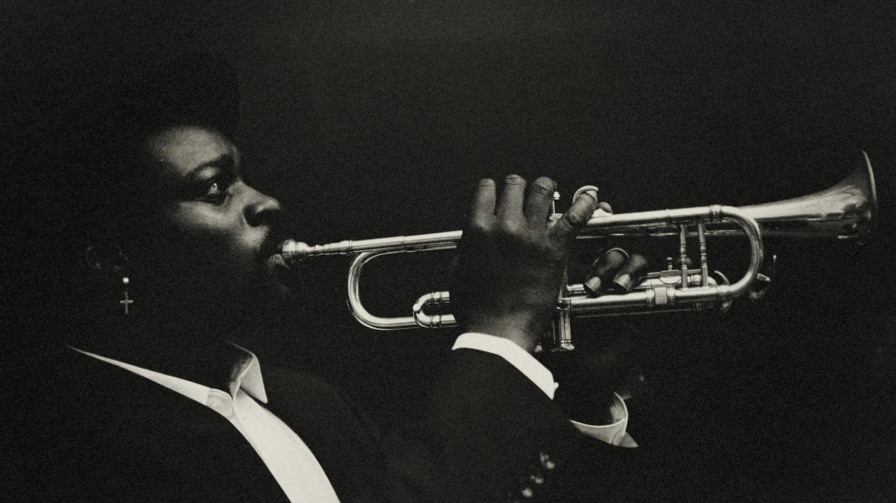

Origins of Jazz

Jazz started in the early 1900s in New Orleans, blending different musical traditions from African, European, and American cultures. It's a mix of African rhythms, blues, and ragtime, with a focus on improvisation—where musicians make up the music as they go. In the 1920s and 1930s, people like Louis Armstrong and Duke Ellington helped make jazz popular. Armstrong was known for his trumpet solos, while Ellington led big bands that played swing music.Jazz kept changing through the years. In the 1940s, bebop came around with fast, complex tunes led by players like Charlie Parker. Later, musicians like Miles Davis and John Coltrane experimented even more with the sound, creating styles like cool jazz and modal jazz. Even now, jazz continues to grow and mix with other types of music. It's a big part of music festivals like the NYC Winter Jazzfest, where both old and new forms of jazz are celebrated.